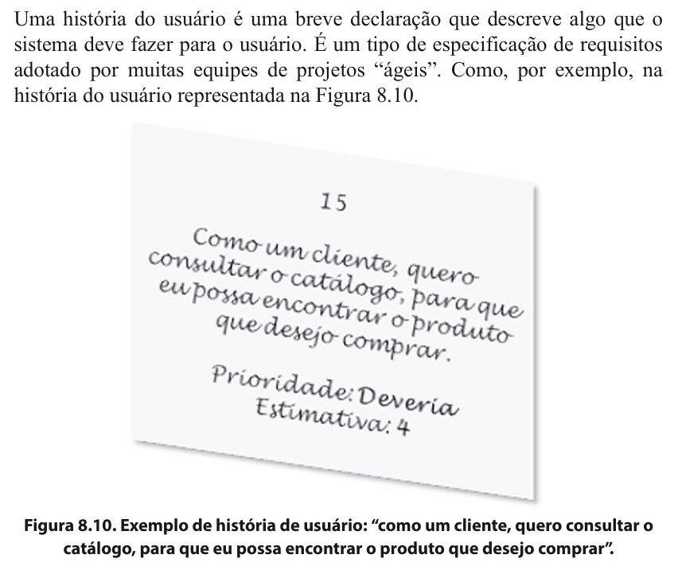
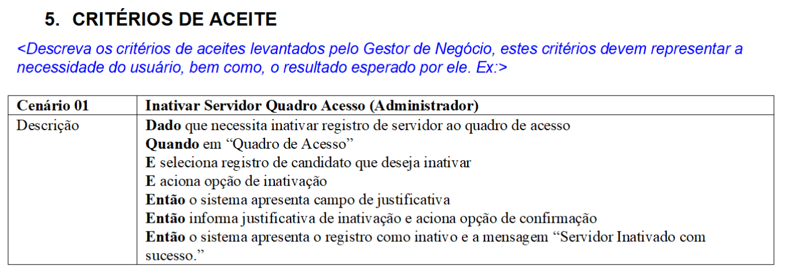
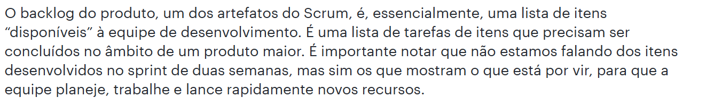

Lista de Verificação - Entrega 4
Introdução
O artefato apresenta o planejamento da verificação dos artefatos desenvolvidos pelo grupo 4 e grupo 5 durante a Etapa 4 (Modelagem Ágil de Requisitos).
Objetivos
O objetivo deste documento é registrar a lista de verificação da 4ª etapa do Grupo 4, que será utilizada para verificar artefatos do próprio grupo e do Grupo 5.
Metodologia
Através de reuniões, o grupo decidiu adotar a metodologia de verificação por inspeção desenvolvida por Fagan (Michael E. Fegan) em 1976. Dessa maneira, cada integrante participa na entrega do projeto nos prazos planejados. Cada artefato varificado gera um relatório anexado junto aos demais artefatos daquela entrega. Para responder às perguntas apresentadas nas listas de verificação o avaliador usará as opções Sim, Não, Incompleto ou Não se aplica. O avaliador tambem poderá escrever observações para cada item, se achar necessário.
Lista de Verificação
Tabela 1 ─ Lista de Verificação da Modelagem Ágil de Requisitos
| N° | Questão | Autor |
|---|---|---|
| Itens do Desenvolvimento do Projeto | ||
| 1 | O histórico de versão padronizado? | André Barros |
| 2 | O(s) autor(es) e o(s) revisor(es) para cada artefato? | André Barros |
| 3 | Referências bibliográficas e/ou bibliografia em todos os artefatos? | André Barros |
| 4 | As tabelas e imagens possuem legenda e fonte e elas chamadas dentro dos texto? | André Barros |
| 5 | Um texto fazendo uma introdução dos artefatos? | André Barros |
| 6 | O cronograma executado com quem realizou cada artefato/atividade com as datas de início e fim da construção realização do artefato/atividade? | André Barros |
| 7 | Ata(s) da(s) reuniões (com data, horário de início e do final, participantes, objetivo, atividades definidas etc)? | André Barros |
| 8 | A gravação da reunião do grupo? | André Barros |
| 9 | Vídeo de apresentação na categoria “não listado” no youtube? | André Barros |
| Itens do conteúdo da disciplina | ||
| 1 | As Histórias de Usuário? | André Barros |
| 2 | Os títulos das histórias de usuário são auto-explicativo? | André Barros |
| 3 | O “quem”, “o que” e o “por que” estão definidos na história de usuário? | André Barros |
| 4 | A participação do cliente e/ou persona na validação das histórias de usuário? | André Barros |
| 5 | A história possui critérios de aceitação? | André Barros |
| 6 | A participação do cliente e/ou persona na elicitação de requisitos? | André Barros |
| 7 | Todas as histórias de usuários podem ser testadas? | André Barros |
| 8 | O backlog? | André Barros |
| 9 | O backlog possui épicos e temas bem definidos e descritos? | André Barros |
| 10 | As Histórias de Usuário seguem algum modelo ou padrão? | André Barros |
| 11 | NFR Framework? | André Barros |
| 12 | A definição do RNF e as fontes de evidência na literatura? | André Barros |
| 13 | O cartão de especificação do RNF? | André Barros |
| 14 | Os softgoals condizem com o contexto? | André Barros |
| 15 | Softgoals representam metas bem definidas? | André Barros |
| 16 | Os impactos foram corretamente propagados? | André Barros |
| Itens Desenvolvidos Pelo Grupo | ||
| Q1 | As histórias de usuário possuem rastreabilidade? | Artur Ricardo |
| Q2 | As histórias de usuário no backlog estão priorizadas de acordo com a importância para o negócio e o usuário? | Emivalto Júnior |
| Q3 | Os épicos derivam mais de uma feature? | João Pedro |
| Q4 | O NFR Framework possui os 3 tipos de softgoals? | Matheus Henrick |
| Q5 | Os refinamentos do NFR Framework estão descritos da forma correta? | Pedro Lopes |
Autores: Pedro Lopes, Emivalto Júnior, João Pedro, Artur Ricardo, Matheus Henrick e André Barros.
üìö Refer√™ncias Bibliográficas
VAZQUEZ, Carlos Eduardo; SIMÕES, Guilherme Siqueira. Engenharia de Requisitos: software orientado ao negócio. Rio de Janeiro: Brasport, 2016.
- [1]

BRASIL. Ministério da Agricultura, Pecuária e Abastecimento. Pregão Eletrônico nº 05/2018 – Artefatos: Estória de Usuário. 2019. Disponível em: https://www.gov.br/agricultura/pt-br/acesso-a-informacao/licitacoes-e-contratos/edital/2019/pregao-eletronico-no-05-2018/templates-artefatos/estoria-de-usuario.doc/view. Acesso em: 20 nov. 2024.
- [5]

LUCIDCHART. Como fazer um backlog do produto. Blog da Lucidchart. Disponível em: https://www.lucidchart.com/blog/pt/como-fazer-um-backlog-do-produto. Acesso em: 20 nov. 2024.
- [8]

SILVA, Reinaldo Antônio da. NFR4ES: Um catálogo de requisitos não-funcionais para sistemas embarcados. 2019. Dissertação (Mestrado em Ciência da Computação) – Universidade Federal de Pernambuco, Recife, 2019.
üìë Hist√≥rico de vers√µes
| Versão | Descrição | Autor(es) | Data de Produção | Revisor(es) | Data de Revisão |
|---|---|---|---|---|---|
1.0 |
Criação do documento. | Matheus Henrick | 17/12/2024 | Pedro Lopes | 17/12/2024 |
1.1 |
Adição da referência. | Matheus Henrick | 17/12/2024 | Pedro Lopes | 17/12/2024 |
1.2 |
Adição das âncoras. | Matheus Henrick | 17/12/2024 | Artur Ricardo | 17/12/2024 |